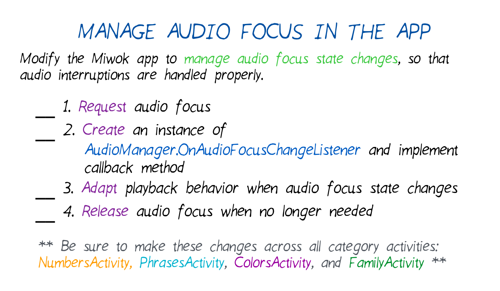

26. Manage Audio Focus in the App
Manage Audio Focus in the App
Question:
Start Quiz:

Solution:
INSTRUCTOR NOTE:
Previous Quiz Solutions:
- Solution from Learn About Audio Focus quiz
- Solution from Request Audio Focus quiz
- Solution from Audio Focus States quiz
Articles:
Reference documentation:
(Optional) Mid-way checkpoint: After you’ve attempted task #2, if you want to check your work against our implementation, here’s the code for the OnAudioFocusChangeListener.
These are the changes needed to complete the quiz.
This is the state of the code after completing the quiz.
Emoji art supplied by http://emojione.com